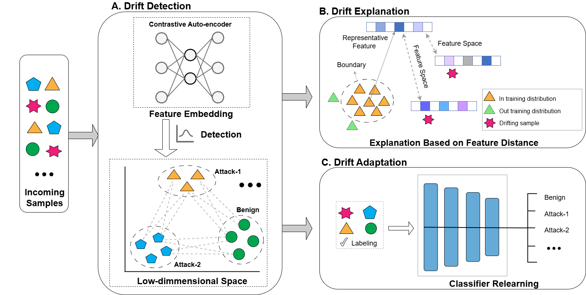
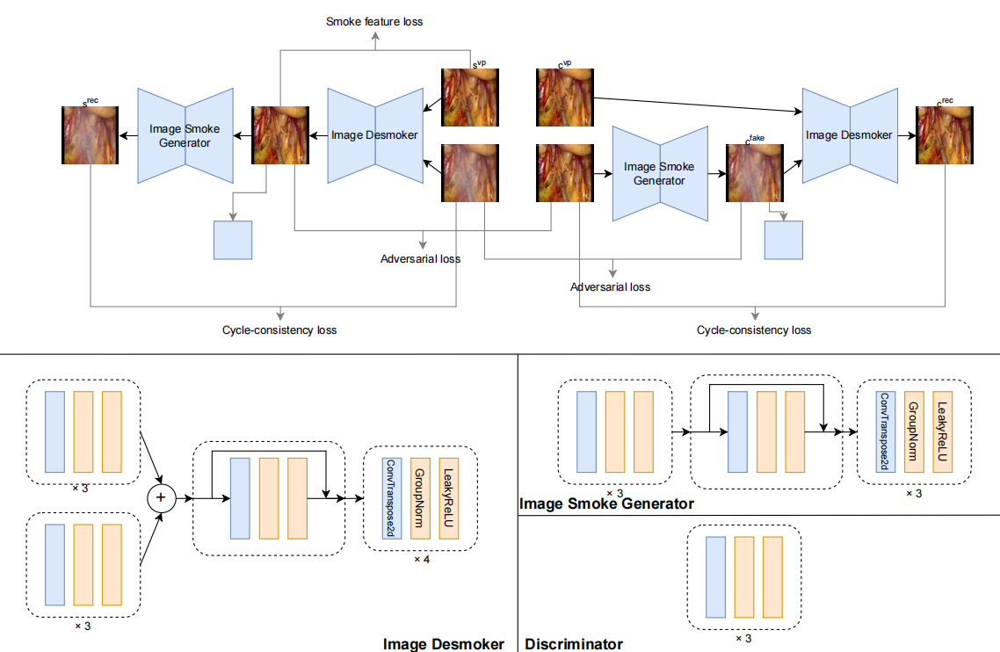

I am Zhexi Luo, an undergraduate in Computer Science at Sun Yat-sen University, advised by Prof. Wei-Shi Zheng at ISEE@SYSU. I am also a research intern at the Institute of Information Engineering, Chinese Academy of Sciences, advised by Prof. Aimin Yu.
My research focuses on robot learning, especially dexterous manipulation with dexterous hands and robot foundation models. I aim to build generalizable and dexterous robotic systems that leverage foundation models to interact naturally with the real world.
Outside of research, I am a surfer who enjoys exploring the world's surf spots. I am also the proud dad of Mocha, a Samoyed with Siberian heritage.
If you have any ideas or thoughts related to my research, feel free to reach out!
A generalizable dexterous framework that leverages generative foundation models to achieve omni-capabilities across diverse user prompts, dexterous embodiments, and grasping tasks.

DriftTrace: Combating Concept Drift in Security Applications through Detection and Explanation
Yuedong Pan, Lixin Zhao, Tao Leng, Zhexi Luo, Lijun Cai, Aimin Yu, Dan Meng
Under Review, IEEE Transactions on Information Forensics and Security (T-IFS), 2026
project page / arXiv / code
A unified framework that combines detecting, explaining, and adapting to out-of-training-distribution (OOD) data for improving model robustness in dynamic open-world environments.
Project

Smoke Removal in Laparoscopic Surgical Videos Using Temporal Smoke-Free Semantic Information
Developed a novel framework that integrates video prediction and image desmoking to address surgical smoke in laparoscopic videos. By leveraging temporal semantic information from smoke-free frames within a Cycle-GAN based architecture, the framework achieves real-time smoke removal and demonstrates superior performance over existing approaches, improving surgical visibility and safety.
Experience
Sun Yat-sen University
Bachelor in Computer Science and Technology
2022 - Present
Awards
First Prize in National Mathematical Contest in Modeling, 2023
{kind=link}